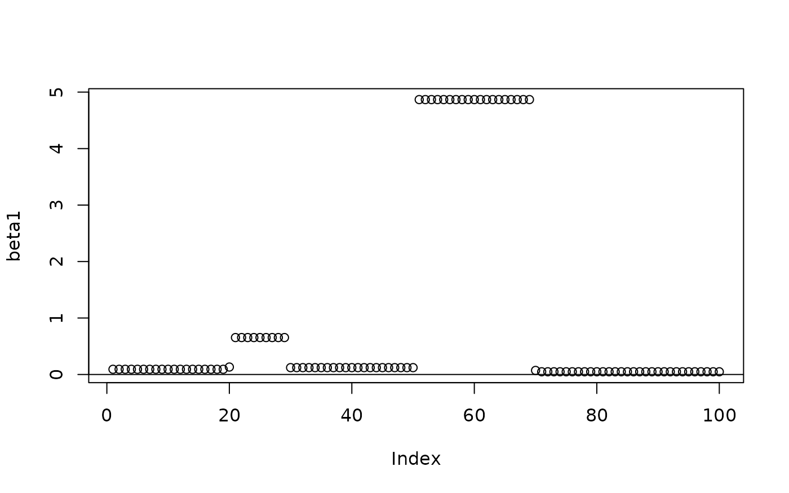
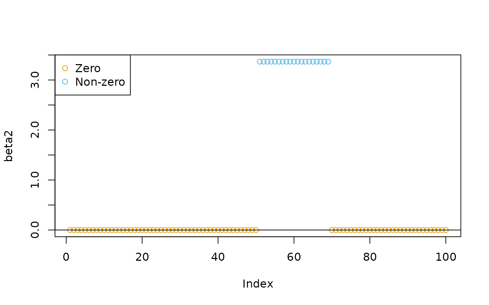
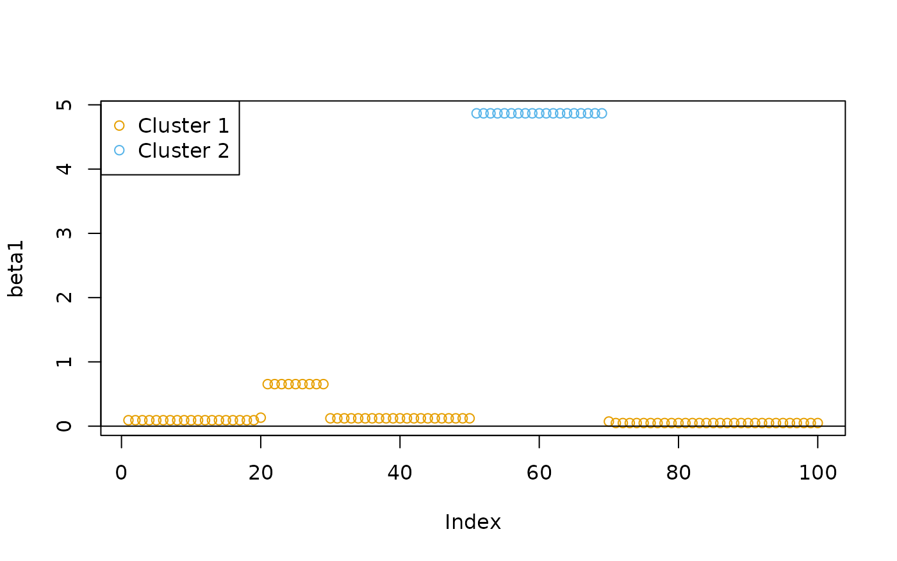
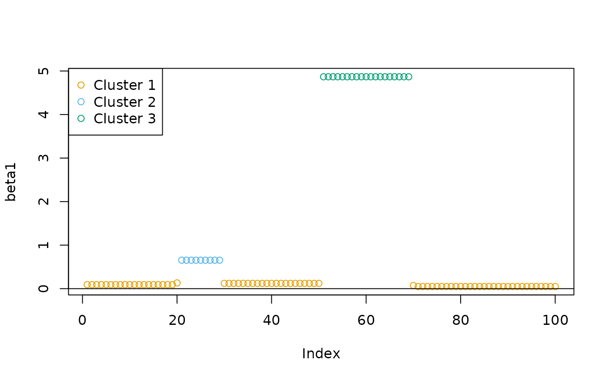
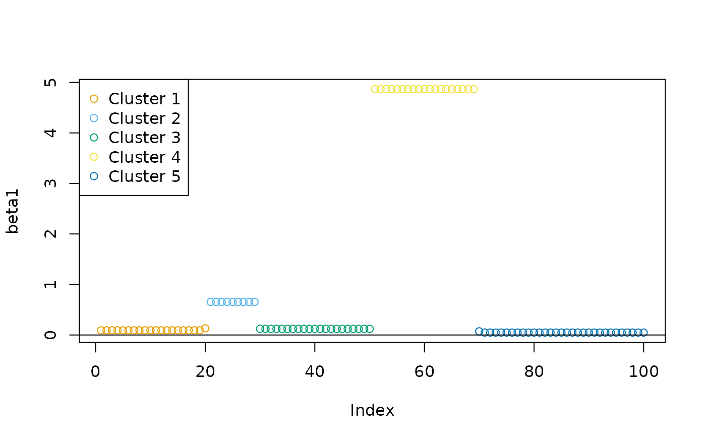
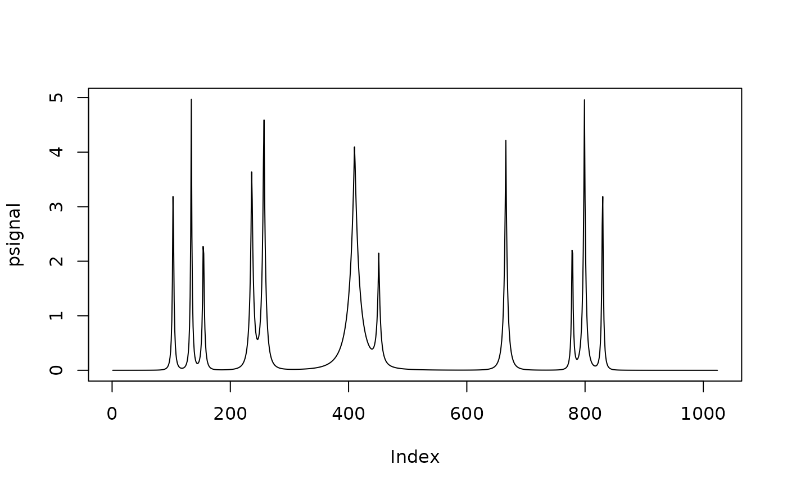
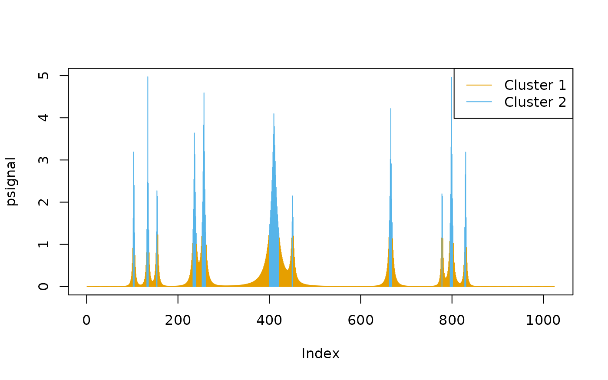
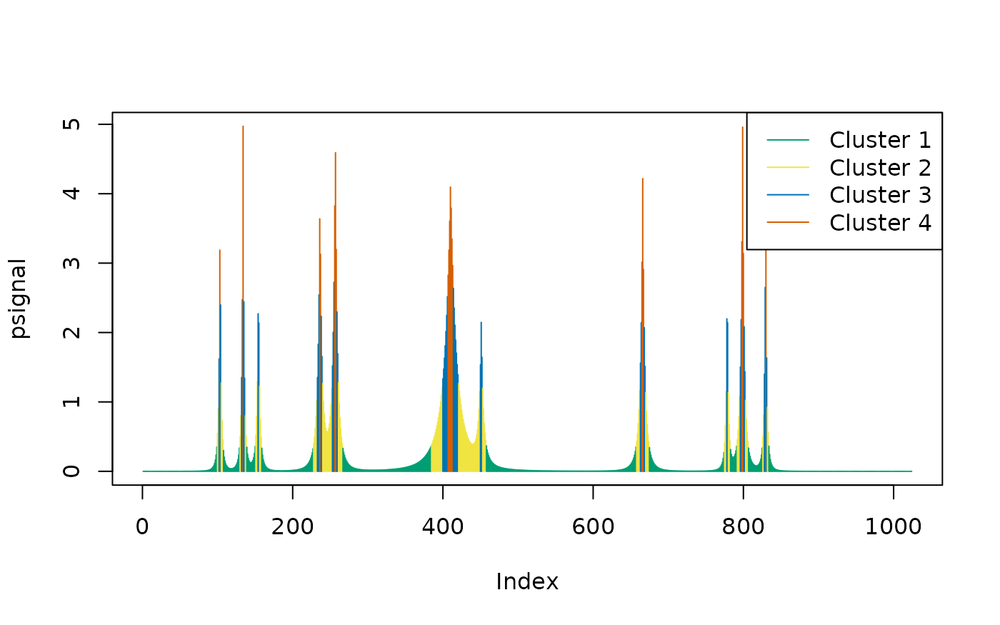

Maximum Homogeneity Clustering for One-Dimensional Data
Nan Xiao <https://nanx.me>
Source:vignettes/oneclust.Rmd
oneclust.RmdIntroduction
oneclust implements the maximum homogeneity clustering (partitioning) method for univariate data described in Fisher (1958) via dynamic programming. Given a one-dimensional numerical vector \((a_1, a_2, \ldots, a_n)\), a weight vector \((w_1, w_2, \ldots, w_n)\), and a positive integer \(k < n\), the algorithm seeks to minimize
\[ D = \sum_{i = 1}^{n} w_i (a_i - \bar{a_i})^2 \]
when each \(a_i\) is assigned into \(k\) clusters. \(\bar{a_i}\) is the weighted mean of the cluster that \(a_i\) belongs to. Fisher proved that the optimal partitions have to be contiguous. Contiguous means for \(i < j < k\), if \(a_i\) and \(a_k\) are assigned to the same cluster, then \(a_j\) must also be assigned to the same cluster — otherwise the partition would be suboptimal. This fact leads to a substantially reduced number of possible partitions and dynamic programming solutions.
Intuitively, maximum homogeneity clustering can be used to smooth the data and reveal its structures. It has some potential applications in data pre-processing and post-processing in statistical machine learning.
Feature engineering for high-cardinality categorical features
Categorical features with high cardinality or rare levels pose a common challenge when building certain types of supervised learning models. For example, classification trees might only be able to handle a limited number of levels in categorical predictors, because a binary node split on a categorical feature with \(l\) levels means finding one from \(2^{l-1}\) possible combinations thus computationally intractable.
To tackle this problem, Breiman et al. (1984) discussed splitting a categorical feature into two subsets when the response is binary, and generalized Fisher’s result to arbitrary convex node impurity functions. Lightgbm (G. Ke et al. 2017) employs this method to find the optimal split by sorting the histogram based on the training objective. As such, besides one-hot encoding and hashing, recoding high-cardinality categorical features with histogram sorting and maximum homogeneity partitioning could be a viable feature engineering strategy in practice. The application is also not limited to tree models.
Simulated postal code data
In this section, we simulate a high-cardinality variable with a binary response. The key assumption here is: the probabilities of having which response correlate to the size of the level. After the data is generated, we use maximum homogeneity clustering on the (sorted) histogram of the categorical variable. Our goal is to verify if the clustering results can uncover this level size structure and potentially help the classification modeling later. This example is derived from the “rare levels” vignette in the vtreat package (Zumel and Mount 2016).
Generate a training set and an independent test set:
df_levels <- sim_postcode_levels(nlevels = 500, seed = 42)
train <- sim_postcode_samples(df_levels, n = 100000, threshold = 3000, prob = c(0.2, 0.1), seed = 43)
test <- sim_postcode_samples(df_levels, n = 100000, threshold = 3000, prob = c(0.2, 0.1), seed = 44)The categorical variable has 500 (unique) levels of postal codes. The training and test set each has 100,000 samples. The level size follows a log normal distribution \(LN(\log(4000), 1)\). For postal code levels with fewer than 3,000 samples, they are defined as “rare levels” and has a probability of 0.2 to get response label 1. Otherwise, the level has a probability of 0.1 of getting response label 1. The rest of the samples will get a response label 0.
head(df_levels)
#> size postcode
#> 1 15756 z04113
#> 2 2274 z04578
#> 3 5751 z02580
#> 4 7532 z01457
#> 5 5993 z03546
#> 6 3597 z04056
head(train)
#> postcode label is_rare
#> 1 z04546 0 FALSE
#> 2 z03223 0 FALSE
#> 3 z01687 0 FALSE
#> 4 z01301 0 TRUE
#> 5 z00848 0 FALSE
#> 6 z03046 0 FALSE
head(test)
#> postcode label is_rare
#> 1 z01482 1 FALSE
#> 2 z03825 1 FALSE
#> 3 z02533 0 FALSE
#> 4 z03640 1 FALSE
#> 5 z01608 1 FALSE
#> 6 z02130 0 FALSERecode the training set
For the training set, we cluster the postal codes into 32 clusters by the size of each level (histogram):
k <- 32
level_hist <- table(train$postcode)
level_new <- oneclust(level_hist, k)$cluster
feature_tr_levels <- as.character(1:k)
feature_tr <- as.character(level_new[match(train$postcode, names(level_hist))])
feature_tr <- ordered(feature_tr, levels = feature_tr_levels)The postal codes belong to the first five clusters have a higher probability (approximately 0.2) of getting label 1. The other clusters have a lower probability (around 0.1) of getting label 1:
op <- par(las = 1)
plot(feature_tr, train$label, lty = 0, xlab = "Cluster", ylab = "Label")
abline(h = 0.2, col = cud(1))
abline(h = 0.1, col = cud(2))
par(op)We can also verify that the number of the samples in the first five clusters is close to the actual number of samples in the “rare levels”:
When the specified number of clusters \(k\) is smaller, the results might not be as good though.
Recode the test set
In practice, we should encode the postal codes in the test set with the same cluster labels as we used in the training set, so that the classification models can be correctly applied to the test set.
feature_te <- as.character(level_new[match(test$postcode, names(level_hist))])
feature_te <- ordered(feature_te, levels = feature_tr_levels)Check if the recoded variable has the similar label pattern:
op <- par(las = 1)
plot(feature_te, test$label, lty = 0, xlab = "Cluster", ylab = "Label")
abline(h = 0.2, col = cud(1))
abline(h = 0.1, col = cud(2))
par(op)Grouping coefficients in regression models
Besides sparsity and other properties, the homogeneity of the estimated coefficients in linear regressions is an important property — meaning certain groups of variables should be encouraged to share the same coefficients (Z. T. Ke, Fan, and Wu 2015). The source of homogeneity could be attributed to the systematic similarities between variables, for example, financial assets that belong to the same sector, or sets of adjacent variables with strong spatial correlation (Lin et al. 2017).
Simulated regression data
We use an fused lasso regression model on simulated data to illustrate the potential application in post-processing the coefficients. The example is derived from the vignette in the genlasso package (Tibshirani, Taylor, et al. 2011).
Raw estimates
# # If genlasso is available:
# out <- genlasso::fusedlasso1d(y)
out <- readRDS("out.rds")
Soft-thresholding
We can use soft-thresholding to transform the raw coefficient estimates into zero and non-zero values:
# beta2 <- genlasso::softthresh(out, lambda = 1.5, gamma = 1)
beta2 <- readRDS("beta2.rds")
grp <- as.integer(beta2 != 0) + 1L
plot(beta2, col = cud(grp))
abline(h = 0)
legend("topleft", legend = c("Zero", "Non-zero"), col = cud(unique(grp)), pch = 1)
Clustering (k = 2)
We can also use the maximum homogeneity clustering method to group the coefficients into two clusters:
cl1 <- oneclust(beta1, k = 2)$cluster
plot(beta1, col = cud(cl1))
abline(h = 0)
legend("topleft", legend = paste("Cluster", unique(cl1)), col = cud(unique(cl1)), pch = 1)
Clustering (k = 3)
If needed, we can increase \(k\) to get more groups of coefficients:
cl2 <- oneclust(beta1, k = 3)$cluster
plot(beta1, col = cud(cl2))
abline(h = 0)
legend("topleft", legend = paste("Cluster", unique(cl2)), col = cud(unique(cl2)), pch = 1)
Clustering while preserving data order (k = 5)
We sorted the data before clustering in all previous examples. Since
the data has a strong spatial correlation, we may need to preserve the
order of the data points when clustering them. This was called the
“restricted problem” in Fisher (1958). To
solve such problems, use sort = FALSE:
cl3 <- oneclust(beta1, k = 5, sort = FALSE)$cluster
plot(beta1, col = cud(cl3))
abline(h = 0)
legend("topleft", legend = paste("Cluster", unique(cl3)), col = cud(unique(cl3)), pch = 1)
Sequential data peak calling and segmentation
For sequential data such as time series data, the algorithm might be useful for peak calling and segmentation.
Simulated time series data
We use an example from pracma::findpeaks():
x <- seq(0, 1, len = 1024)
pos <- c(0.1, 0.13, 0.15, 0.23, 0.25, 0.40, 0.44, 0.65, 0.76, 0.78, 0.81)
hgt <- c(4, 5, 3, 4, 5, 4.2, 2.1, 4.3, 3.1, 5.1, 4.2)
wdt <- c(0.005, 0.005, 0.006, 0.01, 0.01, 0.03, 0.01, 0.01, 0.005, 0.008, 0.005)
psignal <- numeric(length(x))
for (i in seq(along = pos)) {
psignal <- psignal + hgt[i] / (1 + abs((x - pos[i]) / wdt[i]))^4
}
plot(psignal, type = "l")
Peak calling (k = 2)
Group the signal into two clusters:
cl <- oneclust(psignal, k = 2)
plot(psignal, type = "h", col = cud(cl$cluster))
legend("topright", legend = paste("Cluster", unique(cl$cluster)), col = cud(unique(cl$cluster)), lty = 1)
Cluster 2 covers the peak locations — the method did not specify a single data point as the peak, instead, it finds intervals.
Peak calling (k = 4)
If we increase \(k\), there will be fewer intervals included in the peak cluster (Cluster 4), with narrower peak intervals:
cl <- oneclust(psignal, k = 4)
plot(psignal, type = "h", col = cud(cl$cluster + 2))
legend("topright", legend = paste("Cluster", unique(cl$cluster)), col = cud(unique(cl$cluster + 2)), lty = 1)
One may also use the parameter w in
oneclust() to use the weighted version of the algorithm and
amplify the signal.